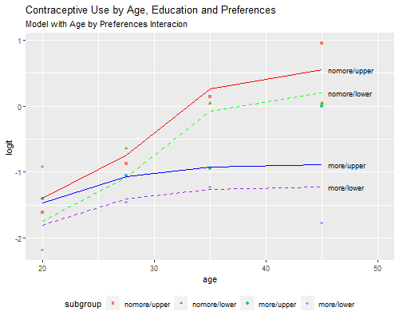
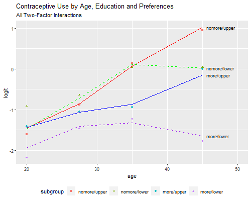
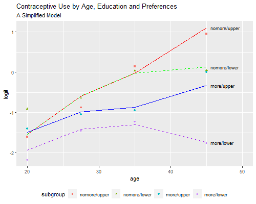

{% include r.css %}


<div id="c3s6" class="section level2 first">
<h2 class="first">3.6 Multi-factor Models: Model Selection</h2>
<p>We now move to an analysis using all three predictors: age, desire
for no more children, and education, which is grouped into two
categories: lower primary or less, and upper primary or more. The data
can be read from the datasets section. We will use the wider format,
that has 16 rows; one for each combination of the three predictors, with
columns for users and nonusers. (The last section shows how one can
obtain the same results using the longer format, that has 32 rows: one
for each combination of the three predictors and response, with a column
for the frequency of that combination.)</p>
<pre class="r"><code>&gt; library(haven)
&gt; library(dplyr)
&gt; cuse &lt;- read_dta(&quot;https://grodri.github.io/datasets/cusew.dta&quot;)
&gt; cuse &lt;- mutate(cuse, age=as_factor(age), educ=as.numeric(educ), 
+   nomore=as.numeric(nomore), Y=cbind(users, nonusers) )
&gt; cuse</code></pre>
<pre><code># A tibble: 16 × 6
   age    educ nomore nonusers users Y[,&quot;users&quot;] [,&quot;nonusers&quot;]
   &lt;fct&gt; &lt;dbl&gt;  &lt;dbl&gt;    &lt;dbl&gt; &lt;dbl&gt;       &lt;dbl&gt;         &lt;dbl&gt;
 1 &lt;25       0      0       53     6           6            53
 2 &lt;25       0      1       10     4           4            10
 3 &lt;25       1      0      212    52          52           212
 4 &lt;25       1      1       50    10          10            50
 5 25-29     0      0       60    14          14            60
 6 25-29     0      1       19    10          10            19
 7 25-29     1      0      155    54          54           155
 8 25-29     1      1       65    27          27            65
 9 30-39     0      0      112    33          33           112
10 30-39     0      1       77    80          80            77
11 30-39     1      0      118    46          46           118
12 30-39     1      1       68    78          78            68
13 40-49     0      0       35     6           6            35
14 40-49     0      1       46    48          48            46
15 40-49     1      0        8     8           8             8
16 40-49     1      1       12    31          31            12</code></pre>
<p>We start by considering models that treat age as a factor with four
categories, fertility preferences using an indicator for wanting no
more, and educational level using an indicator for upper primary or
more. Because we have only three variables we are able to fit all
possible models, which provides a nice check on the usual model building
strategies using forward selection and backward elimination.</p>
<div id="the-deviance-table" class="section level3">
<h3>The Deviance Table</h3>
<p>Let us reproduce Table 3.13, which compares all possible one, two and
three-factor models.</p>
<p>There are 19 basic models for these data. Not all of them would be of
interest in any given analysis, but for completeness we will fit all
except the null and saturated, effectively reproducing Table 3.13 in the
notes.</p>
<p>To simplify some of the repetitive tasks required to fit so many
models, I’ll create a vector with the right-hand-side formulas, and
write a function to fit each model, pasting the response and adding the
family and the data frame before calling <code>glm()</code>.</p>
<pre class="r"><code>&gt; rhs &lt;- c(&quot;1&quot;,&quot;age&quot;, &quot;educ&quot;, &quot;nomore&quot;,
+    &quot;age + educ&quot;, &quot;age + nomore&quot;, &quot;educ + nomore&quot;, 
+    &quot;age * educ&quot;, &quot;age * nomore&quot;, &quot;educ * nomore&quot;, 
+    &quot;age + educ + nomore&quot;,
+    &quot;age * educ + nomore&quot;, &quot;age * nomore + educ&quot;, 
+    &quot;age + educ * nomore&quot;, &quot;age * (educ + nomore)&quot;, 
+    &quot;educ * (age + nomore)&quot;, &quot;(age + educ) * nomore&quot;, 
+    &quot;age*educ*nomore - age:educ:nomore&quot;)
&gt; mfit &lt;- function(formula) glm(formula, family=binomial, data=cuse)</code></pre>
<p>Now we simply loop, storing the results in a list</p>
<pre class="r"><code>&gt; models &lt;- vector(&quot;list&quot;,length(rhs))
&gt; for(i in 1:length(rhs)) {
+   mf &lt;- as.formula(paste(&quot;Y&quot;, rhs[i], sep=&quot;~&quot;))
+   models[[i]] &lt;- glm(mf, family=&quot;binomial&quot;, data=cuse)
+ }</code></pre>
<p>Finally I use <code>lapply()</code> to extract the deviances and df,
adding the right-hand sides to identify the models. The result is Table
3.13:</p>
<pre class="r"><code>&gt; data.frame(
+   model = rhs, 
+   deviance = round(unlist(lapply(models, deviance)), 2),
+   df = unlist(lapply(models, df.residual))
+ )</code></pre>
<pre><code>                               model deviance df
1                                  1   165.77 15
2                                age    86.58 12
3                               educ   165.07 14
4                             nomore    74.10 14
5                         age + educ    80.42 11
6                       age + nomore    36.89 11
7                      educ + nomore    73.87 13
8                         age * educ    73.03  8
9                       age * nomore    20.10  8
10                     educ * nomore    67.64 12
11               age + educ + nomore    29.92 10
12               age * educ + nomore    23.15  7
13               age * nomore + educ    12.63  7
14               age + educ * nomore    23.02  9
15             age * (educ + nomore)     5.80  4
16             educ * (age + nomore)    13.76  6
17             (age + educ) * nomore    10.82  6
18 age*educ*nomore - age:educ:nomore     2.44  3</code></pre>
<p>Please refer to the notes for various tests based on these models.
You should be able to test for net effects of each factor given the
other two, test each of the interactions, and test the goodness of fit
of each model. We now examine three models of interest.</p>
</div>
<div id="the-three-factor-additive-model" class="section level3">
<h3>The Three-factor Additive Model</h3>
<p>We now show the coefficients and standard errors for the three-factor
additive model, focusing on the net effect of each factor. The gross
effects of age and desire or no more children have been shown in earlier
sections.</p>
<pre class="r"><code>&gt; summary(models[[11]])$coefficients</code></pre>
<pre><code>              Estimate Std. Error    z value     Pr(&gt;|z|)
(Intercept) -1.9661694  0.1720307 -11.429179 2.989214e-30
age25-29     0.3893816  0.1758500   2.214282 2.680938e-02
age30-39     0.9086135  0.1646211   5.519425 3.401115e-08
age40-49     1.1892389  0.2144300   5.546048 2.921980e-08
educ         0.3249947  0.1240355   2.620173 8.788505e-03
nomore       0.8329548  0.1174705   7.090760 1.333778e-12</code></pre>
<pre class="r"><code>&gt; exp(coef(models[[11]]))</code></pre>
<pre><code>(Intercept)    age25-29    age30-39    age40-49        educ      nomore 
  0.1399921   1.4760678   2.4808804   3.2845805   1.3840232   2.3001050 </code></pre>
<p>Contraceptive use differs by each of these factors, even when we
compare women who fall in the same categories of the other two. For
example the odds of using contraception are 38% higher among women with
upper primary or more, compared to women with lower primary or less, in
the same age group and category of desire for more children.</p>
<p>The deviance of 29.92 on 10 d.f. tells us that this model does not
fit the data, so the assumption that logit differences by one variable
are the same across categories of the other two is suspect.</p>
</div>
<div id="the-model-with-one-interaction-effect" class="section level3">
<h3>The Model with One Interaction Effect</h3>
<p>Of the three models with one interaction term, the one that achieves
the largest improvement in fit compared to the additive model is the
model with an age by no more interaction, where the difference in logits
between women who want no more children and those who do varies by
age.</p>
<p>The standard reference-cell parametrization can easily be obtained
using factor variables:</p>
<pre class="r"><code>&gt; summary(models[[13]])$coefficients</code></pre>
<pre><code>                   Estimate Std. Error     z value     Pr(&gt;|z|)
(Intercept)     -1.80317181  0.1801786 -10.0076897 1.410068e-23
age25-29         0.39460393  0.2014504   1.9588147 5.013449e-02
age30-39         0.54666349  0.1984206   2.7550747 5.867873e-03
age40-49         0.57952354  0.3474172   1.6680910 9.529766e-02
nomore           0.06621967  0.3307063   0.2002371 8.412952e-01
educ             0.34064785  0.1257653   2.7086005 6.756764e-03
age25-29:nomore  0.25917997  0.4097504   0.6325314 5.270397e-01
age30-39:nomore  1.11266211  0.3740433   2.9746882 2.932865e-03
age40-49:nomore  1.36167401  0.4843255   2.8114851 4.931338e-03</code></pre>
<pre class="r"><code>&gt; b &lt;- coef(models[[13]])
&gt; exp(b[grep(&quot;nomore&quot;,names(b))])</code></pre>
<pre><code>         nomore age25-29:nomore age30-39:nomore age40-49:nomore 
       1.068461        1.295867        3.042447        3.902721 </code></pre>
<p>Make sure you know how to interpret all of these coefficients. For
example the ratio of the odds of using contraception among women who
want no more children relative to those who want more in the same
category of education is 1.07 among women under age 25, but 3.9 times
more (giving an odds ratio of 4.1) among women in their forties.</p>
<p>To aid in interpretation and model criticism we can plot the observed
and fitted logits, effectively reproducing Figure 3.4. Because we will
need more than one plot, I will encapsulate the calculations in a
function `pof()’, for <u>p</u>lot <u>o</u>bserved and <u>f</u>itted.</p>
<pre class="r"><code>&gt; library(ggplot2)
&gt; labels = c(&quot;nomore/upper&quot;, &quot;nomore/lower&quot;, &quot;more/upper&quot;, &quot;more/lower&quot;)
&gt; cuse &lt;- mutate(cuse, agem = c(20, 27.5, 35, 45)[age], obs = log(users/nonusers),
+ code = 5 - 2*nomore - educ, subgroup = factor(code, labels=labels))
&gt; gp &lt;- ggplot(cuse, aes(agem, obs, shape=subgroup, color=subgroup)) + geom_point() +
+   scale_shape_manual(values= c(15, 17, 19, 18)) + xlim(20,50) +
+   theme(legend.position=&quot;bottom&quot;) + xlab(&quot;age&quot;) + ylab(&quot;logit&quot;)
&gt; pof &lt;- function(model, subtitle) {
+   cuse$fit = predict(model, type=&quot;link&quot;)
+   p &lt;- gp
+   linetypes &lt;- c(&quot;solid&quot;,&quot;dashed&quot;,&quot;solid&quot;,&quot;dashed&quot;)
+   colors &lt;- c(&quot;red&quot;, &quot;green&quot;,&quot;blue&quot;,&quot;purple&quot;)
+   for(i in 1:4) {
+ sg &lt;- filter(cuse, subgroup==labels[i])
+ y &lt;- filter(sg, age==&quot;40-49&quot;)$fit
+ lt &lt;- linetypes[i]
+ p = p + geom_line(data=sg, mapping=aes(agem, fit), linetype=lt, color=colors[i]) +
+   annotate(&quot;text&quot;, x=45.6, y=y, label=labels[i], hjust=0, size=3) +
+   ggtitle(&quot;Contraceptive Use by Age, Education and Preferences&quot;, subtitle=subtitle)
+   }
+   p
+ }</code></pre>
<p>I first use <code>geom_point</code> to plot the observed logits and
save the plot as <code>gp</code>. The function receives a model, adds
the fitted logits to the data frame, and plots a line for each subgroup,
using <code>annotate</code> to identify the subgroup. I use the same
markers as in the notes, but with what I hope is a better legend.</p>
<p>So here’s our first plot</p>
<pre class="r"><code>&gt; png(&quot;fig34r.png&quot;, width=500, height=400)
&gt; pof(models[[13]], &quot;Model with Age by Preferences Interacion&quot;)
&gt; dev.off()</code></pre>
<pre><code>png 
  2 </code></pre>
<p></p>
<p>I often find that interpretation of the interactions is more direct
if I combine them with the main effects. Here is the same model showing
the difference in logits by desire for more children in each age group,
reproducing the results in Table 3.15</p>
<pre class="r"><code>&gt; mint &lt;- glm(Y~age + age:nomore + educ, family=binomial, data=cuse)
&gt; exp(coef(mint))</code></pre>
<pre><code>    (Intercept)        age25-29        age30-39        age40-49            educ 
      0.1647754       1.4837964       1.7274796       1.7851877       1.4058581 
  age&lt;25:nomore age25-29:nomore age30-39:nomore age40-49:nomore 
      1.0684614       1.3845839       3.2507371       4.1699068 </code></pre>
<p>We find 34% higher odds of using contraception among women with some
education, compared to women with no education in the same age group and
category of desire. We also see that the odds of using contraception
among women who want no more children are higher than among women who
want more children in the same age and category of education, 7% higher
under age 25, 38% higher at age 25-29, three times as high for women in
their thirties, and four times as high among women in their forties.</p>
<p>This model passes the conventional goodness of fit test and therefore
provides a reasonable description of contraceptive use by age,
education, and desire for more children.</p>
</div>
<div id="all-three-two-factor-interactions" class="section level3">
<h3>All Three Two-Factor Interactions</h3>
<p>As explained in the notes, there is some evidence that education may
interact with the other two variables. The model with all three
two-factor interactions provides the best fit, with a deviance of 2.44
on three d.f., but is substantially more complex.</p>
<p>Rather than present parameter estimates, I will reproduce Figure 3.5,
which provides some hints on how the model could be simplified. Thanks
to our <code>pof</code> command this is now an easy task:</p>
<pre class="r"><code>&gt; png(&quot;fig35r.png&quot;, width=500, height=400)
&gt; pof(models[[18]], &quot;All Two-Factor Interactions&quot;)
&gt; dev.off()</code></pre>
<pre><code>png 
  2 </code></pre>
<p></p>
<p>A picture is indeed worth a thousand words. We see that among women
who want no more children, contraceptive use increases almost linearly
(in the logit scale) with age, with no differences by education except
in the oldest age group, where use flattens for women with no education.
Among women who do want more children, contraceptive use is generally
lower, and increases more slowly with age; there are some differences by
education, and these are higher among older women. There’s also a hint
of curvature by age for women with no education who want more
children.</p>
</div>
<div id="a-parsimonious-model" class="section level3">
<h3>A Parsimonious Model</h3>
<p>These observations suggest ways to simplify the model. The age
interactions are quite simple: the increase with age is steeper among
women who want no more children, and the difference by education is
larger among women in their forties. Similarly, the educational
difference is larger in use for spacing and among older women.</p>
<p>One way to capture these features is to use a quadratic on age, allow
the slope (but not the curvature) to vary by desire for more children,
and introduce effects of education only for spacing and after age 40
(and thus not for limiting before age 40). To facilitate interpretation
of the resulting parameters I center age around 30:</p>
<p>So here is a more parsimonious model</p>
<pre class="r"><code>&gt; cuse &lt;- mutate(cuse, agemc = agem - 30, agemcsq=agemc^2,
+   eduspacers = as.numeric(educ==1 &amp; nomore==0),
+   eduforties = as.numeric(educ==1 &amp; age == &quot;40-49&quot;))
&gt; parsi &lt;- glm(Y~ agemc*nomore+ agemcsq+ eduspacers + eduforties,
+   family=binomial, data=cuse)
&gt; parsi</code></pre>
<pre><code>
Call:  glm(formula = Y ~ agemc * nomore + agemcsq + eduspacers + eduforties, 
    family = binomial, data = cuse)

Coefficients:
 (Intercept)         agemc        nomore       agemcsq    eduspacers    eduforties  
   -1.339265      0.024755      0.980417     -0.003431      0.432112      0.979816  
agemc:nomore  
    0.058961  

Degrees of Freedom: 15 Total (i.e. Null);  9 Residual
Null Deviance:      165.8 
Residual Deviance: 5.865    AIC: 91.37</code></pre>
<p>This model has only seven parameters and a deviance of 5.9 on 9 d.f.,
so it is much simpler than the previous model and fits pretty well.
Obviously we can’t take the test seriously because we didn’t specify
these terms in advance, but the exercise shows how one can simplify a
model by capturing its essential features. Before we interpret the
coefficients let us check the fitted values</p>
<pre class="r"><code>&gt; png(&quot;fig35br.png&quot;, width=500, height=400)
&gt; pof(parsi, &quot;A Simplified Model&quot;)
&gt; dev.off()</code></pre>
<pre><code>png 
  2 </code></pre>
<p></p>
<p>We see that the model provides almost the same fit as the much more
complex model of the previous subsection.</p>
<pre class="r"><code>&gt; exp(coef(parsi)[&quot;agemc&quot;])</code></pre>
<pre><code>   agemc 
1.025064 </code></pre>
<pre class="r"><code>&gt; exp(coef(parsi)[c(&quot;nomore&quot;,&quot;agemc:nomore&quot;)])</code></pre>
<pre><code>      nomore agemc:nomore 
    2.665569     1.060734 </code></pre>
<pre class="r"><code>&gt; exp(coef(parsi)[c(&quot;eduspacers&quot;,&quot;eduforties&quot;)])</code></pre>
<pre><code>eduspacers eduforties 
  1.540508   2.663965 </code></pre>
<p>Returning to the parameter estimates, we see that contraceptive use
generally increases with age, with an increment in the odds of about 2.5
percent per year at age 30 (less at younger and older ages, with
differences noted below after age 40). Use is much higher among women
who want no more children, with an odds ratio of 2.7 at age 30,
increasing about six percent per year of age. Women with some education
are more likely to use contraception for spacing purposes, with an odds
ratio of 1.5, and are also more likely to use for either spacing or
limiting after age 40, with an odds ratio of 2.7 (which makes the odds
ratio by education for spacers after age 40 just above four).</p>
<p>Alternative model simplifications are given in the notes.</p>
</div>
<div id="weighted-individual-data" class="section level3">
<h3>Weighted Individual Data</h3>
<p>As promised, we show briefly how one can obtain the same results
using a dataset with one row for each combination of predictors and
response, with a column indicating the frequency of that combination,
effectively simulating individual data.</p>
<p>We will illustrate the equivalence using the model with a main effect
of education and an interaction between age and wanting no more
children, which we kept as <code>mint</code>.</p>
<pre class="r"><code>&gt; cuse2 &lt;- read_dta(&quot;https://grodri.github.io/datasets/cuse.dta&quot;)
&gt; cuse2 &lt;- mutate(cuse2, age=as_factor(age), educ=as_factor(educ), 
+   nomore=as.numeric(desire==1))
&gt; mintlong &lt;- glm(cuse~age + age:nomore + educ, weights=n, family=binomial, 
+   data=cuse2)
&gt; mint &lt;- glm(Y~age + age:nomore + educ, family=binomial, data=cuse)
&gt; exp(coef(mint))</code></pre>
<pre><code>    (Intercept)        age25-29        age30-39        age40-49            educ 
      0.1647754       1.4837964       1.7274796       1.7851877       1.4058581 
  age&lt;25:nomore age25-29:nomore age30-39:nomore age40-49:nomore 
      1.0684614       1.3845839       3.2507371       4.1699068 </code></pre>
<p>As you can see, the estimates and standard errors are exactly the
same as before. The deviance is different because in this dataset the
saturated model would have a separate parameter for each woman. We can
reproduce the deviance of 12.63 on 7 d.f. given earlier, by computing
the difference in deviances (or twice the difference in log-likelihoods)
between the model with a three factor interaction and this model:</p>
<pre class="r"><code>&gt;    threeway = glm(cuse ~ age*nomore*educ, weights=n, family=binomial, data=cuse2)
&gt;    data.frame( deviance = deviance(mintlong) - deviance(threeway),
+ df = df.residual(mintlong) - df.residual(threeway))</code></pre>
<pre><code>  deviance df
1 12.62955  7</code></pre>
<p>Thus, working with grouped data gives exactly the same estimates as
working with individual data, except of course for the deviances. Recall
that deviances can be interpreted as goodness of fit tests only with
grouped data, but differences in deviances between nested models can
always be interpreted as likelihood ratio tests. We discuss how to test
goodness of fit with individual data in <a href="c3s8">Section
3.8</a>.</p>
<p><small>Updated fall 2022</small></p>
</div>
</div>
